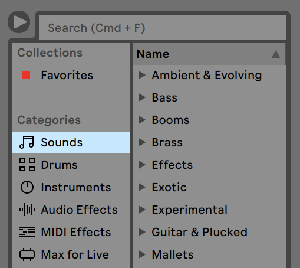
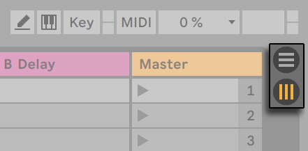
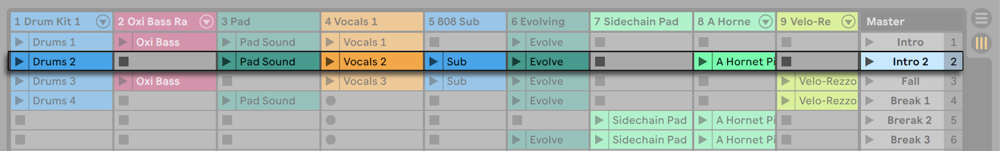
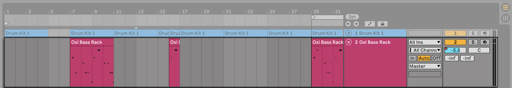
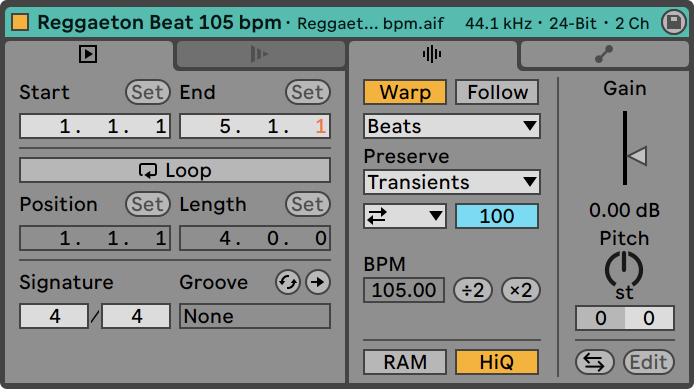
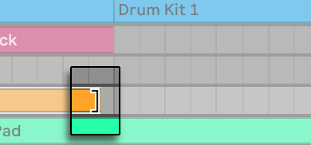

You spent Modules 2 and 3 in Audacity: first editing sound that was handed to you, then recording your own. This module moves you into Ableton Live, the program the rest of the course is built around. You will load the sample library you built in Module 3 and start making pieces from it. The biggest change from Audacity is that in Live your edits never alter the original sound files, so you can experiment freely. On Wednesday you open Live and get started.
Take from the lab's gear storage: audio interface, headphones. Plug in and run through the start-of-session steps on the Session Routines card before continuing here.
A DAW (digital audio workstation) is software for recording, editing, arranging, and mixing audio on a computer. By that definition, Audacity is already a DAW, and you have been doing DAW work since Week 2. So why switch?
Because Ableton Live is a full DAW, and Audacity is a narrow one. In Audacity you mostly worked with one piece of sound at a time, on a short stack of tracks, with a fixed set of editing tools. Live is built to hold many tracks playing together, to play instruments you trigger from a keyboard, and to mix everything through a built-in mixing desk. A version of it runs in most studios you will walk into.
When you open Live, the window is divided into a few areas, each doing one job. Across the top is the Control Bar, which holds the play and stop buttons, the tempo, and the buttons that switch between Live's two views. Down the left is the browser, where your sounds, instruments, and effects live. The large area in the middle is where you build a piece. Along the bottom, when you select a clip, is the Clip View, where that clip's settings appear.
The sections below walk the parts you use first. Wednesday's lab is where you open Live and put hands on all of it.
The document you work in is called a Live Set. It plays the same role Audacity's project did: it is the file that holds your work, with its tracks, its clips, and all their settings.
A Set lives inside a Project folder, which keeps the Set and the sounds it uses together in one place. Your local-first, NAS-as-sync habit does not change: pull your work down at the start of a session, upload it at the end, the same as always.
You have worked at 48 kHz since Module 2, and your Module 3 sample library is already there. Live runs at the same rate, so your library files load into a Set with nothing to convert. The sample rate does not change in this module.
Bit depth changes once, at the end. When you export a finished piece, you export at 32-bit, a step up from the 24-bit you have worked in. It is a setting you choose in the export dialog, and it gives the final file extra headroom from all the mixing Live has done.
Down the left side of the window is the browser. It is where Live keeps everything you can put in a piece: the sounds that ship with Live, your own saved samples, the instruments, and the effects. You scroll or search, click a sound to hear it, then drag the one you want into your Set.

When you drag a sound from the browser onto a track, Live makes a clip from it: a single piece of sound sitting on the track, the thing you actually arrange and edit. The sound file stays where it was. The clip points at it.
A Live Set gives you two ways to look at your work, called the Arrangement View and the Session View. You switch between them with the Tab key, or with the two buttons at the top right of the window.

Tab switches between the two.The Arrangement View is a timeline. Time runs left to right, tracks stack top to bottom, and you build a piece by placing sound along the line. It works like the Audacity window you already know, and it is home base for this module.
The Session View is a grid. Instead of a timeline, you get rows and columns of slots, each holding a short piece of sound you can start and stop on its own. Producers use it to try ideas and loop sections before committing them to a timeline. You meet it properly once you have sound to play with; for now it is enough to know it is there.

The two views are not two separate pieces. They share one Set, one set of tracks, and one mixer. What each view keeps to itself is its clips: the Arrangement holds the clips on your timeline, the Session holds the clips in your grid. Pressing Tab changes which one you are looking at. It does not change what is stored, and it does not change what you hear.
A track is a lane that holds clips. In the Arrangement it runs left to right along the timeline; in the Session it is a column. The two views share the same tracks, which is what connects them.

A track plays one clip at a time. Sounds that need to play together go on separate tracks; sounds that take turns can share a track.
Live has two kinds of track, audio and MIDI, and this module starts with audio. An audio track carries recorded sound, the kind your sample library is made of. MIDI arrives next week, when you start triggering sounds from a keyboard.
You have been making clips since you dragged your first sound out of the browser. A clip is the basic unit of work in Live: one recording, one loop, one sample from your library, sitting on a track.
An audio clip does not contain the sound. It contains a reference to the sound: a pointer to a file on the drive, plus instructions for which part of that file to play and how to play it. The file it points at is called a sample, and the samples in your Module 3 library are exactly these files. The clip is the instruction sheet; the sample is the sound.
Double-click a clip and the Clip View opens along the bottom of the window. Everything you can do to a clip lives here: where it starts and ends, its fades, its volume, and more.

That a clip points at a file, rather than containing it, changes how you edit.
In Audacity, editing changed the file. A cut deleted samples. A fade rewrote them. Once you exported and closed, those edits were baked in, which is why you kept careful copies and worked a little cautiously. That approach is called destructive editing: the edit destroys the original and replaces it with the edited version.
Live works the other way. When you trim a clip, fade it, change its volume, or stretch it, those edits live on the clip, and Live applies them as the sound plays. The sample on the drive is never touched. This is called nondestructive editing: the edit shapes playback without changing the original.
The payoff is large: you cannot ruin your source. Trim too much, stretch a sound until it breaks, change your mind an hour later, and the original file is still sitting there untouched, ready for you to start over. Where Module 2 rewarded caution, Live rewards experiment. Try the edit. If you do not like it, undo it or drag the clip's edge back. Nothing was lost.

The "save a copy before you cut" habit you built in Module 2 was the right instinct for destructive editing. In Live you can relax it. The edits sit on the clip, and the file they point at is safe.
On Wednesday you put this to work: you pull your library down from the NAS, drop your own sounds into a Set as clips, and arrange and edit them on the Arrangement timeline, knowing the files themselves are never at risk.
Before leaving the station, run the end-of-session routine on the Session Routines card. NAS upload first, gear teardown second.